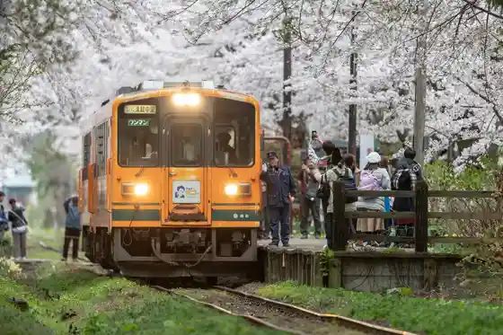
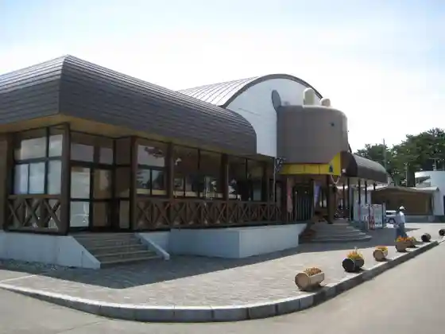

Dazaiosamu Memorial Museum (Shayo Kan)
Goshogawara, Aomori · 0173-53-2020 · Official / source link
Jusan Mizumi
Goshogawara, Aomori · 0173-38-1515 · Official / source link
Ritsu Nei Takeshi Ta no Kan
Goshogawara, Aomori · 0173-38-3232 · Official / source link
Ashino Park
Goshogawara, Aomori · Official / source link

Roadside Station Jusan Mizumi Highlands (Tosamu Green Park)
Goshogawara, Aomori · 0173-62-3556 · Official / source link

Tsugaru Kanayama Yaki
Goshogawara, Aomori · 0173-29-3350 · Official / source link
Shoppingu Center ELM
Goshogawara, Aomori · 0173-33-4000 · Official / source link
Kawakura Sai no Kawara Jizo Mikoto Rei Taisai
Goshogawara, Aomori · 0173-53-3282 · Official / source link
Tsugarujamisen Hall
Goshogawara, Aomori · 0173-54-1616 · Official / source link
Kintaro Onsen
Goshogawara, Aomori · 0173-34-7715 · Official / source link
Dazaiosamu Sokai no Ie (Kyu Tsushima Ie Niiza Shiki)
Goshogawara, Aomori · 0173-52-3063 · Official / source link
Jifubuki Experience
Goshogawara, Aomori · 080-3195-4036 · Official / source link
Hirota Onsen
Goshogawara, Aomori · 0173-34-6385 · Official / source link
LOVE VADOS (Mohodori Joryu Kenkyusho)
Goshogawara, Aomori · 0173-23-5805 · Official / source link
Y.C.M Kichi Ikuzo Korekushon Museum
Goshogawara, Aomori · 0173-26-6686 · Official / source link
Tsugaru Kanayama Yaki Natsu Festival
Goshogawara, Aomori · 0173-29-3350 · Official / source link
Wakimoto Iwakisan Jinja Taisai
Goshogawara, Aomori · 0173-62-3536 · Official / source link
Kumo Sho Tera
Goshogawara, Aomori · 0173-53-2074 · Official / source link
Akai Yane no Kissaten (Ekisha)
Goshogawara, Aomori · 0173-52-3398 · Official / source link
Goshogawara Tourist Information
Goshogawara, Aomori · 0173-38-1515 · Official / source link
Naka no Shima Burijji Park
Goshogawara, Aomori · 0173-62-2775 · Official / source link
Sanno Bo Iseki Hiyoshi Shrine
Goshogawara, Aomori · 0173-35-2111 · Official / source link
Kawakura Sai no Kawara Jizo Mikoto
Goshogawara, Aomori · 0173-53-3282 · Official / source link
Moya Yama
Goshogawara, Aomori · 0173-62-3536 · Official / source link
Kanagi Kanko Bussan Kan (Sanchoku Merosu)
Goshogawara, Aomori · 0173-54-1155 · Official / source link
Jusan Minato Iseki
Goshogawara, Aomori · 0173-35-2111 · Official / source link
Kyuhei Yambe House
Goshogawara, Aomori · 0173-34-8870 · Official / source link
Ashino Koen Oto Campground
Goshogawara, Aomori · 0173-35-2111 · Official / source link
Onuma Park
Goshogawara, Aomori · 0173-35-2111 · Official / source link
Meshi Tsume Dam
Goshogawara, Aomori · 0173-35-2107 · Official / source link
Shiura Folk History Museum
Goshogawara, Aomori · 0173-62-2775 · Official / source link
Kanagi Genki Village
Goshogawara, Aomori · 0173-52-2882 · Official / source link
Kikugaoka Sports Park
Goshogawara, Aomori · 0173-35-2111 · Official / source link
San Hashira Shrine
Goshogawara, Aomori · 0172-32-2407 · Official / source link
Kumano Miya
Goshogawara, Aomori · 0172-32-2407 · Official / source link
Ritsu Nei Takeshi Ta Konseputorumu
Goshogawara, Aomori · 0173-34-8910 · Official / source link
Dazaiosamu Omoide Plaza
Goshogawara, Aomori · 0173-35-2111 · Official / source link
Tateno Shrine
Goshogawara, Aomori · 0172-32-2407 · Official / source link
Tsugaru Furawa Center
Goshogawara, Aomori · 0173-35-2111 · Official / source link
Minamidai Tera
Goshogawara, Aomori · 0173-52-2661 · Official / source link
Tsugaru Magu Onnagaoshie Ru Odori Kko ‶ Kase no Yatsu Odori ‶
Goshogawara, Aomori · 0173-52-3232 · Official / source link
Fukushima Castle Ruins
Goshogawara, Aomori · 0173-35-2111 · Official / source link
Shika no Ko Taki
Goshogawara, Aomori · 0173-38-1515 · Official / source link
Fuji Falls
Goshogawara, Aomori · 0173-38-1515 · Official / source link
Karakawa Castle Ruins
Goshogawara, Aomori · 0173-35-2111 · Official / source link
Sakai Nozawa Tame Ike Park
Goshogawara, Aomori · 0173-35-2111 · Official / source link
Komoru Goshogawara
Goshogawara, Aomori · 050-5527-2875 · Official / source link
Nyukawa Ue Shrine
Goshogawara, Aomori · 0172-32-2407 · Official / source link
Okami no Nagane Park
Goshogawara, Aomori · 0173-35-2111 · Official / source link